Reading/Plotting the 'Particles.txt' output file
ReadPlot_particles.RdThe function read_particles reads the ‘Particles.txt’ output file, which stores all the parameter sets tested during the optimisation along with their corresponding goodness-of-fit values
The function plot_particles takes the parameter sets and their corresponding goodness-of-fit value, read by read_particles, and produces the following plots:
1) Dotty plots
2) Histograms
3) Boxplots
4) Correlation matrix (optional)
5) Empirical CDFs
6) Parameter values vs Number of Model Evaluations
7) (pseudo) 3D dotty plots
Usage
read_particles(file="Particles.txt", verbose=TRUE, plot=TRUE,
gof.name="GoF", MinMax=NULL, beh.thr=NA, beh.col="red", beh.lty=1,
beh.lwd=2, nrows="auto", col="black", ylab=gof.name, main=NULL,
pch=19, cex=0.5, cex.main=1.5, cex.axis=1.5, cex.lab=1.5,
<!-- %%..., -->
breaks="Scott", freq=TRUE, do.pairs=FALSE,
dp3D.names="auto", GOFcuts="auto",
colorRamp= colorRampPalette(c("darkred", "red", "orange", "yellow",
"green", "darkgreen", "cyan")), alpha=1, points.cex=0.7,
legend.pos="topleft", do.png = FALSE, png.res = 90,
png.width = 1500, png.height = 900,
params.png.width=1500, params.png.height=900,
dotty.png.fname="Params_DottyPlots.png",
hist.png.fname="Params_Histograms.png",
bxp.png.fname="Params_Boxplots.png",
ecdf.png.fname="Params_ECDFs.png",
runs.png.fname="Params_ValuesPerRun.png",
dp3d.png.fname="Params_dp3d.png",
pairs.png.fname="Params_Pairs.png")
plot_particles(params, gofs, gof.name="GoF", MinMax=NULL, beh.thr=NA,
beh.col="red", beh.lty=1, beh.lwd=2, nrows="auto", col="black",
ylab=gof.name, main=NULL, pch=19, cex=0.5, cex.main=1.5,
cex.axis=1.5, cex.lab=1.5,
<!-- %%..., -->
breaks="Scott", freq=TRUE, do.pairs=FALSE,
weights=NULL, byrow=FALSE, leg.cex=1.5,
dp3D.names="auto", GOFcuts="auto",
colorRamp= colorRampPalette(c("darkred", "red", "orange", "yellow",
"green", "darkgreen", "cyan")), alpha=1, points.cex=0.7,
legend.pos="topleft", verbose=TRUE,
do.png = FALSE, png.res = 90, png.width = 1500, png.height = 900,
params.png.width=1500, params.png.height=900,
dotty.png.fname="Params_DottyPlots.png",
hist.png.fname="Params_Histograms.png",
bxp.png.fname="Params_Boxplots.png",
ecdf.png.fname="Params_ECDFs.png",
runs.png.fname="Params_ValuesPerRun.png",
dp3d.png.fname="Params_dp3d.png",
pairs.png.fname="Params_Pairs.png")
read_velocities(file="Velocities.txt", ... )Arguments
- file
character, name (including path) of the output file with the position and fitness value of each particle and for each iteration
- params
data.frame whose rows represent the values of different parameter sets
- gofs
OPTIONAL. numeric with the values of goodness-of-fit values for each parameter in
params(in the same order!)- verbose
logical, if TRUE, progress messages are printed
- plot
logical, indicates if the following figures has to be produced: dotty plots, histograms, empirical CDFs, Parameter Values Against Number of Model Evaluations, and 3D dotty plots of Parameter Values
- gof.name
character, name to be given to the goodness-of-fit values in all the plots
- MinMax
OPTIONAL. character, indicates if the optimum value in
paramscorresponds to the minimum or maximum of the the objective function. Only used to identify the optimum in the plot
Valid values are in:c('min', 'max')- beh.thr
numeric, used for selecting only the behavioural parameter sets, i.e. those with a goodness-of-fit value greater/less than or equal to
beh.thr, depending on the value ofMinMax
By defaultbeh.thr=NAand all the parameter sets are considered for the subsequent anlysis- beh.col
OPTIONAL. Only used when
plot=TRUE
character, colour for drawing a horizontal line for separating behavioural from non behavioural parameter sets- beh.lty
OPTIONAL. Only used when
plot=TRUE
numeric, line type for drawing a horizontal line for separating behavioural from non behavioural parameter sets- beh.lwd
OPTIONAL. Only used when
plot=TRUE
numeric, width for drawing a horizontal line for separating behavioural from non behavioural parameter sets- nrows
OPTIONAL. Only used when
plot=TRUE
numeric, number of rows to be used in the plotting window
Ifnrowsis set to auto, the number of rows is automatically computed depending on the number of columns ofparams- col
OPTIONAL. Only used when
plot=TRUE
character, colour for drawing the points of the dotty plots- ylab
OPTIONAL. Only used when
plot=TRUE
character, label for the 'y' axis- main
OPTIONAL. Only used when
plot=TRUE
character, title for the plot- pch
OPTIONAL. Only used when
plot=TRUE
numeric, type of symbol to be used for drawing the points of the dotty plots (e.g., 1: white circle)- cex
OPTIONAL. Only used when
plot=TRUE
numeric, values controlling the size of text and points with respect to the default- cex.main
OPTIONAL. Only used when
plot=TRUE
numeric, magnification for main titles relative to the current setting ofcex- cex.axis
OPTIONAL. Only used when
plot=TRUE
numeric, magnification for axis annotation relative to the current setting ofcex- cex.lab
OPTIONAL. Only used when
plot=TRUE
numeric, magnification for x and y labels relative to the current setting ofcex- ...
OPTIONAL. Only used when
plot=TRUE
further arguments passed to the plot command or from other methods- breaks
OPTIONAL. Only used when
plot=TRUE
breaks for plotting the histograms of the parameter sets. Seehist- freq
OPTIONAL. Only used when
plot=TRUE
logical, if TRUE, the histogram graphic is a representation of frequencies, the counts component of the result; if FALSE, probability densities, component density, are plotted (so that the histogram has a total area of one). Defaults to TRUE if and only if breaks are equidistant (and probability is not specified). Seehist- do.pairs
OPTIONAL. Only used when
plot=TRUE
logical, indicates whether a correlation matrix among parameters has to be plotted. If the number of parameter sets tried during the optimisation is large, it may require some time.- weights
OPTIONAL. Only used when
plot=TRUE
numeric vector, values of the weights to be used for computing the empirical CDFs. Seeparams2ecdf- byrow
OPTIONAL. Only used when
plot=TRUE
logical, indicates whether the computations have to be made for each column or for each row ofparams. Seeparams2ecdf- leg.cex
OPTIONAL. Only used when
plot=TRUE
character expansion factor *relative* to current 'par("cex")'. Used for text, and provides the default for 'pt.cex' and 'title.cex'. Default value = 1.2- dp3D.names
character, name of all the parameters (usually only the most sensitive ones) that will be used for plotting pseudo-3D plots
Ifdp3D.names='auto'half the number of parameters infileare chosen randomly for plotting. Seeplot_NparOF- GOFcuts
numeric, specifies at which values of the objective function
gof.namethe colours of the plot have to change. Seeplot_NparOF- colorRamp
R function defining the colour ramp to be used for colouring the pseudo-3D dotty plots of Parameter Values, OR character representing those colours. See
plot_NparOF- alpha
numeric between 0 and 1 representing the transparency level to apply to the colors of the pseudo-3D dotty plots. See
plot_NparOF- points.cex
size of the points to be plotted
- legend.pos
not used yet ...
- do.png
Logical value indicating whether the plots created with this function should be saved as PNG files instead of being drawn only on the active graphics device.
- png.res
Resolution of all the output PNG figures, in pixels per inch.
- png.width
Width of the output PNG figures, in pixels. Only for used for the following figures:
-) ‘Params_ValuesPerRun.png’ -) ‘Params_dp3d.png’ -) ‘Particles_GofPerIter.png’ -) ‘Velocities_ValuePerRun.png’ -) ‘ModelOut_BestSim_vs_Obs.png’ -) ‘ModelOut_Quantiles.png’ -) ‘ConvergenceMeasures.png’
- png.height
Height of the output PNG figures, in pixels. Only for used for the following figures:
-) ‘Params_ValuesPerRun.png’ -) ‘Params_dp3d.png’ -) ‘Particles_GofPerIter.png’ -) ‘Velocities_ValuePerRun.png’ -) ‘ModelOut_BestSim_vs_Obs.png’ -) ‘ModelOut_Quantiles.png’ -) ‘ConvergenceMeasures.png’
- params.png.width
Width of the output PNG figures, in pixels. Only for used for the following figures:
-) ‘Params_DottyPlots.png’ -) ‘Params_Histograms.png’ -) ‘Params_Boxplots.png’ -) ‘Params_ECDFs.png’ -) ‘Params_Pairs.png’
- params.png.height
Height of the output PNG figures, in pixels. Only for used for the following figures:
-) ‘Params_DottyPlots.png’ -) ‘Params_Histograms.png’ -) ‘Params_Boxplots.png’ -) ‘Params_ECDFs.png’ -) ‘Params_Pairs.png’
- dotty.png.fname
OPTIONAL. Only used when
do.png=TRUE
character, filename used to store the PNG file with the dotty plots of the parameter values- hist.png.fname
OPTIONAL. Only used when
do.png=TRUE
character, filename used to store the PNG file with the histograms of the parameter values- bxp.png.fname
OPTIONAL. Only used when
do.png=TRUE
character, filename used to store the PNG file with the boxplots of the parameter values- ecdf.png.fname
OPTIONAL. Only used when
do.png=TRUE
character, filename used to store the PNG file with the empirical CDFs of the parameter values- runs.png.fname
OPTIONAL. Only used when
do.png=TRUE
character, filename used to store the PNG file with the parameter values vs the number of model evaluations- dp3d.png.fname
OPTIONAL. Only used when
do.png=TRUE
character, filename used to store the PNG file with the pseudo-3D plots of all the parameters defined indp3D.names- pairs.png.fname
OPTIONAL. Only used when
do.png=TRUE
character, filename used to store the PNG file with the correlation matrix among the parameters and goodness-of-fit values inparamsandgofs. Seeplot_paramsandhydropairs
Value
read_particles returns a list with four elements:
- part.params
numeric or matrix/data.frame with the parameter values for each particle and iteration
.
- part.gofs
numeric vector with the goodness-of-fit value for each particle and iteration
.
- best.param
numeric with the parameter values of the best particle. In order to be computed, the user has to provide a valid value for
MinMax
.
- best.gof
numeric with the best godness-of-fit value among all the particles. In order to be computed, the user has to provide a valid value for
MinMax
.
Author
Mauricio Zambrano-Bigiarini, mzb.devel@gmail.com
Examples
# \donttest{
local({
# Setting the user temporal directory as working directory
oldwd <- getwd()
on.exit(setwd(oldwd), add = TRUE)
setwd(tempdir())
# Number of dimensions to be optimised
D <- 4
# Boundaries of the search space (Sphere test function)
lower <- rep(-100, D)
upper <- rep(100, D)
# Setting the seed
set.seed(100)
# Runing PSO with the 'Sphere' test function, writting the results to text files
hydroPSO(fn=sphere, lower=lower, upper=upper,
control=list(maxit=100, write2disk=TRUE, plot=TRUE) )
# reading the 'Particles.txt' output file of hydroPSO, and plotting dotty plots,
# histograms, eCDFs, ...
particles <- read_particles(file="./PSO.out/Particles.txt")
# reading only the particles in 'Particles.txt' with a goodness-of-fit value
# lower than 'beh.thr'
particles <- read_particles(file="./PSO.out/Particles.txt", beh.thr=1000, MinMax="min")
}) # local END
#>
#> ================================================================================
#> [ Initialising ... ]
#> ================================================================================
#>
#> [npart=40 ; maxit=100 ; method=spso2011 ; topology=random ; boundary.wall=absorbing2011]
#>
#> [ user-definitions in control: maxit=100 ; write2disk=TRUE ; plot=TRUE ]
#>
#>
#> ================================================================================
#> [ Writing the 'PSO_logfile.txt' file ... ]
#> ================================================================================
#>
#> ================================================================================
#> [ Running PSO ... ]
#> ================================================================================
#>
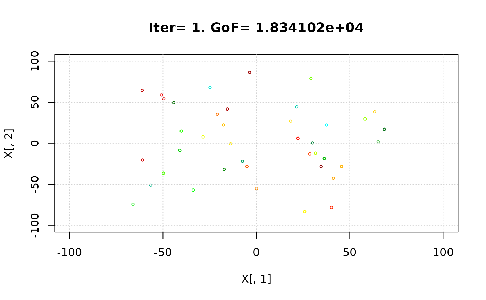


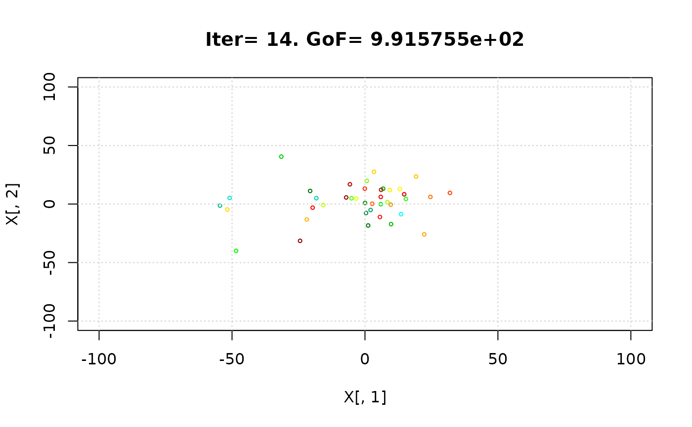

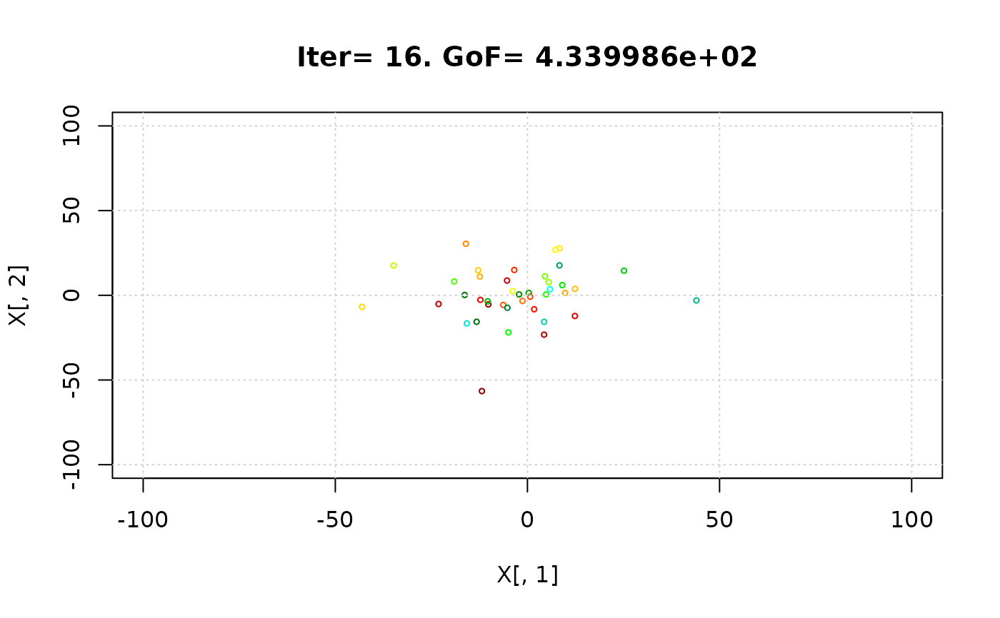


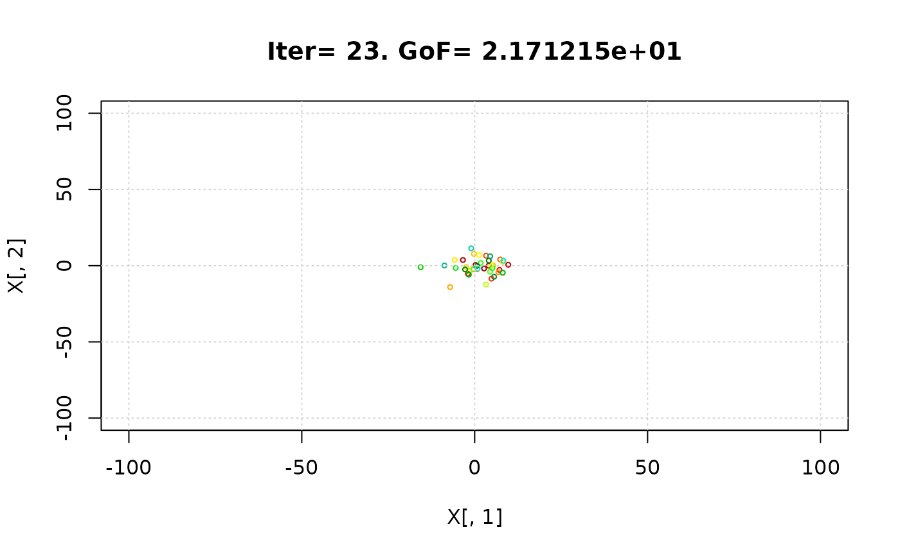


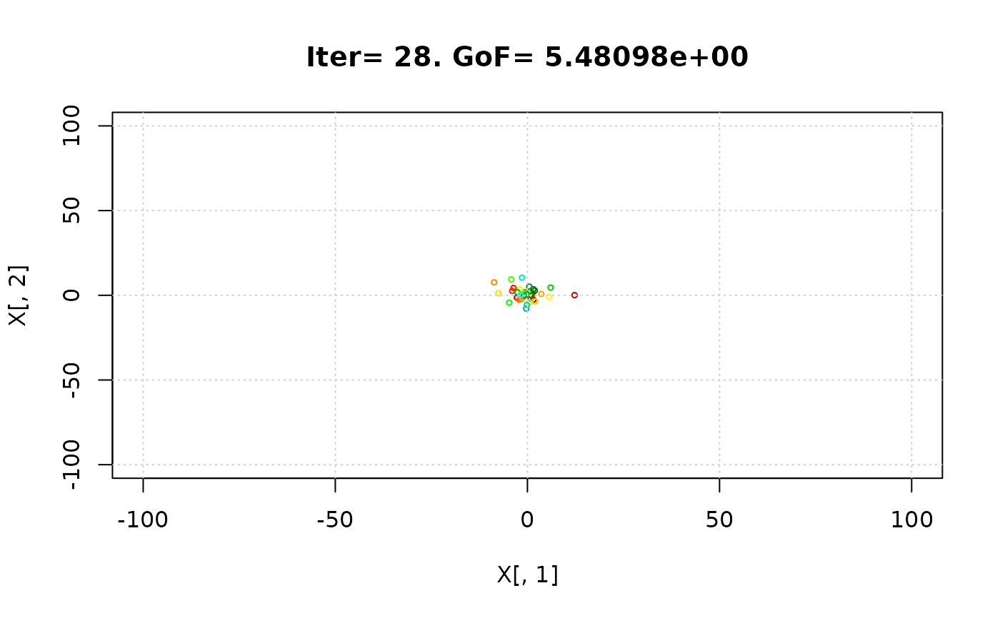


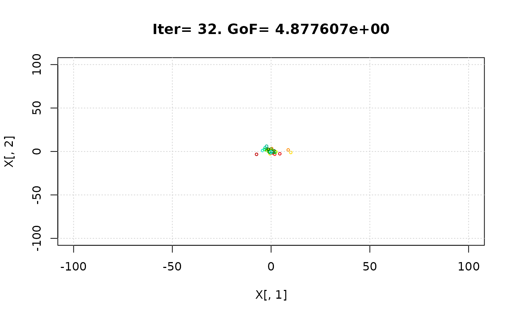

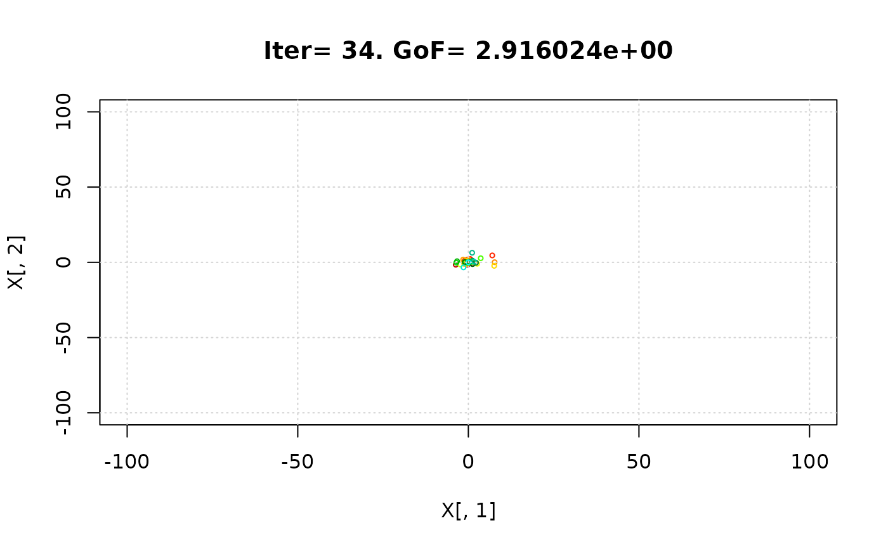


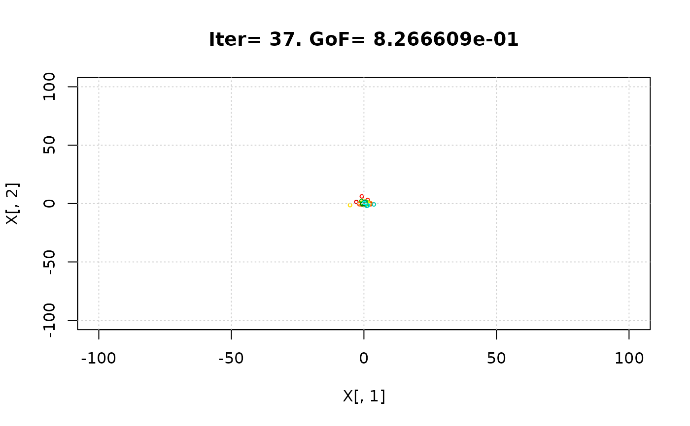
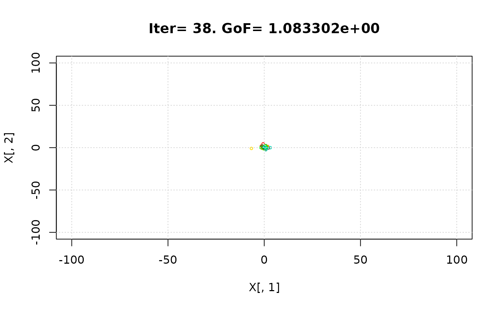


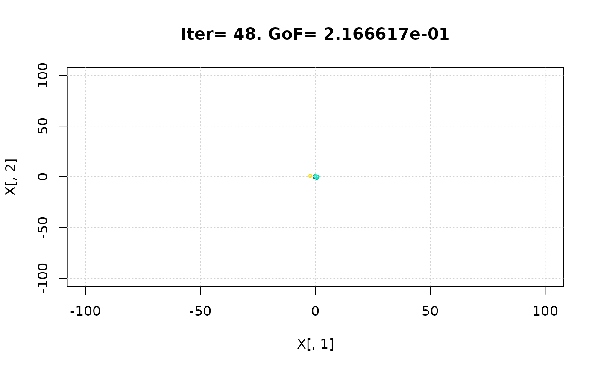
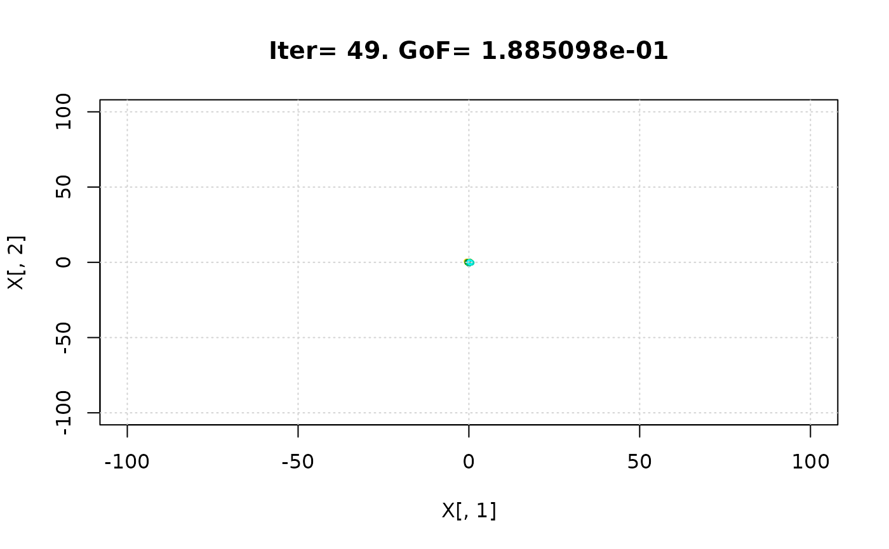


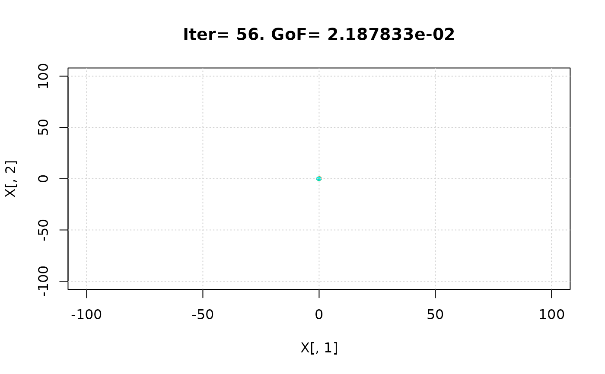


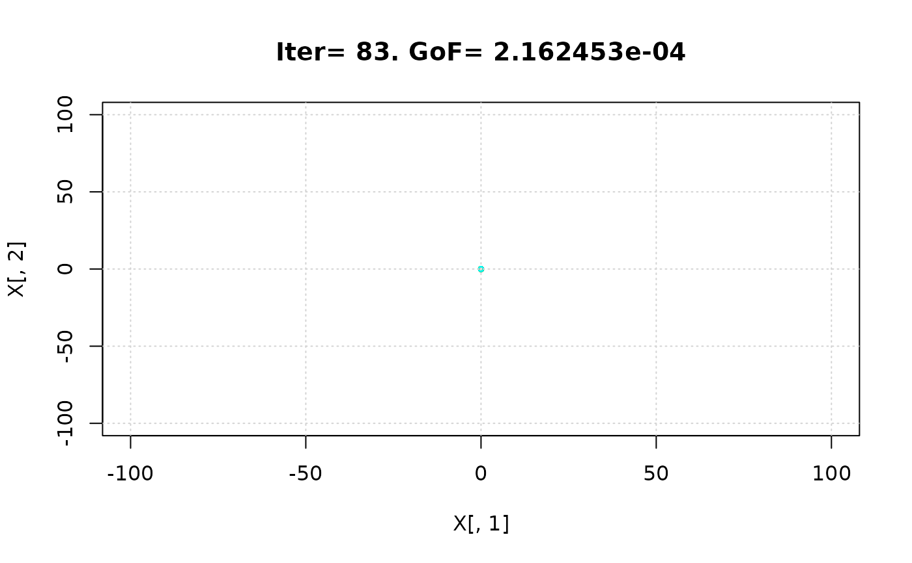


 #> iter:100 Gbest: 6.143E-08 Gbest_rate: 66.13% Iter_best_fit: 6.143E-08 nSwarm_Radius: 3.14E-06 |g-mean(p)|/mean(p): 98.08%
#>
#> [ Writing output files... ]
#>
#> |
#> ================================================================================
#> [ Creating the R output ... ]
#> ================================================================================
#>
#> [ Reading the file 'Particles.txt' ... ]
#> [ Total number of parameter sets: 4000 ]
#>
#> [ Plotting dotty plots for parameter values' ... ]
#> iter:100 Gbest: 6.143E-08 Gbest_rate: 66.13% Iter_best_fit: 6.143E-08 nSwarm_Radius: 3.14E-06 |g-mean(p)|/mean(p): 98.08%
#>
#> [ Writing output files... ]
#>
#> |
#> ================================================================================
#> [ Creating the R output ... ]
#> ================================================================================
#>
#> [ Reading the file 'Particles.txt' ... ]
#> [ Total number of parameter sets: 4000 ]
#>
#> [ Plotting dotty plots for parameter values' ... ]
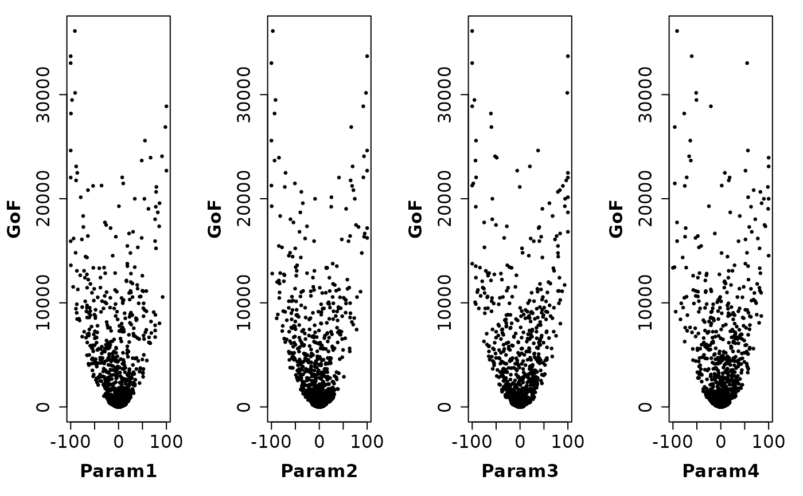
#> [ Plotting histograms for parameter values' ... ]
#> [ Plotting boxplots for parameter values' ... ]
#> [ Plotting empirical CDFs for parameter values' ... ]
#> [ Plotting parameter values vs Number of Model Evaluations' ... ]
#> [ Plotting 3D dotty plots for parameter values' ... ]
#>
#> [ Reading the file 'Particles.txt' ... ]
#> [ Total number of parameter sets: 4000 ]
#> [ Number of behavioural parameter sets: 3442 ]
#>
#> [ Plotting dotty plots for parameter values' ... ]
#> [ Plotting histograms for parameter values' ... ]
#> [ Plotting boxplots for parameter values' ... ]
#> [ Plotting empirical CDFs for parameter values' ... ]
#> [ Plotting parameter values vs Number of Model Evaluations' ... ]
#> [ Plotting 3D dotty plots for parameter values' ... ]
# } # donttest END